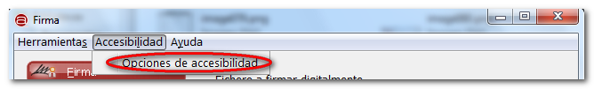
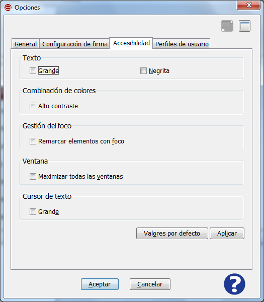

Es posible acceder a las opciones de accesibilidad de la Interfaz de Escritorio del Cliente @firma de dos formas. Bien mediante el
elemento "Opciones" del menú "Herramientas" y pestaña "Accesibilidad".

O bien mediante el elemento "Opciones de accesibilidad" del menú "Accesibilidad"

La pantalla de Opciones de accesibilidad es la mostrada a continuación:

En esta pantalla es posible configurar los siguiente aspectos de accesibilidad:
- Texto:
- Grande: Esta opción activa el tamaño de fuente grande en todos los textos de la herramienta.
- Tecla de acceso rápido: d
- Negrita: Esta opción activa el estilo de fuente negrita en todos los textos de la herramienta.
- Tecla de acceso rápido: n
- Combinación de colores:
- Alto contraste: Esta opción activa el color de texto blanco y el color de fondo negro en toda la herramienta.
- Tecla de acceso rápido: l
- Gestión del foco:
- Remarcar elementos con foco: Esta opción marca de forma unívoca la posición actual del foco.
- Tecla de acceso rápido: f
- Ventana:
- Maximizar todas las ventanas: Esta opción activa el tamaño máximo para todas las ventanas de la herramienta.
- Tecla de acceso rápido: v
- Cursor de texto:
- Grande: Esta opción activa el tamaño grande del cursor de texto en todos los campos de texto de la herramienta.
- Tecla de acceso rápido: e
También existen las siguientes funcionalidades:
- Valores por defecto: Restaura los par´metros de configuración de accesibilidad por defecto, es decir, ninguna configuración de accesibilidad.
- Tecla de acceso rápido: o
- Aplicar: Aplica la configuración de accesibilidad actual.
- Tecla de acceso rápido: i
Al pulsar el icono de ayuda se muestra la ventana de ayuda para el menú "Opciones de accesibilidad".
- Tecla de acceso rápido para el botón de Ayuda: h